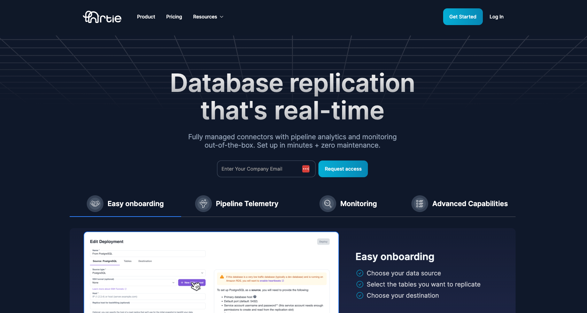

Fivetran was founded in 2012 and is one of the most popular data integration solutions. They have broad coverage of sources and are a great one-stop shop to get data into data warehouses or data lakes. However, there are areas where they are lacking and where we hear a lot of customer complaints, such as insufficient customer support and communication, expensive pricing, and lack of true real-time replication capabilities (note that a 1 minute batch frequency does not equate to 1 minute end to end latency).
In any case, there are data engineering teams out there that are hungry for an alternative to Fivetran. We’ve compiled a list of data integration tools to provide the information needed to switch to a better database replication solution.
Our list goes from analyzing tools that are more database and streaming focused, down to tools that have broader coverage and batch-based architectures. Note that this is not an exhaustive list but a great starting point.

Artie is a fully managed database replication solution that leverages change data capture (CDC) to move data in real-time and in a reliable way. Artie is primarily focused on moving data from OLTP sources to OLAP destinations, but covers some OLTP destinations as well.
Artie offers a 2 week free trial with no limits on volume and its Cloud offering is usage-based (counting monthly rows processed). Artie does not charge for backfills, only for incremental row changes.
Artie uses Apache Kafka as their pipeline’s external buffer, which means they are less likely to have data pipeline disruptions or require full resyncs due to data processing errors or connection issues. Having an external buffer also means there is minimal impact to source database performance and they do not perform database locks. Artie also has full schema evolution support, including handling deletes and DDLs, which means it's an easy to use and end-to-end solution that requires minimal management. Artie offers deployment analytics and monitoring out-of-the-box, providing more visibility to the pipeline. Support is offered via Slack Connect and email, allowing for fast response times.
Artie is recommended for companies that value reliability and accuracy of their production data and/or have use cases that require low latency.
AWS DMS is a database migration solution to help companies move database and analytics workloads to AWS. They support migration from database sources that are on-premise, in Amazon EC2, and in Amazon RDS using CDC replication.
AWS DMS has a free tier that includes up to 750 hours of Single-AZ dms.t2.micro instance usage each month for a year (equal to $8.90/month). They have on-demand pricing that is charged by the hour based on instance type/size and whether you’re using Single-AZ or Multi-AZ. They also have a Serverless option that is based on capacity units used on a per-hour basis, and also depends on whether you’re using Single-AZ or Multi-AZ.
AWS DMS requires some engineering resources to set up, maintain, and monitor the pipeline. Their schema conversion tool (SCT) is also limited in capability, which means regular re-syncs are required if you want an accurate replica.
AWS DMS is recommended for companies that are heavily reliant on the AWS ecosystem, have limited data types, and have the engineering resources to manage the overhead.
Google Datastream offers a serverless CDC replication solution. They help companies move data from transactional databases (MySQL, PostgreSQL, AlloyDB, SQL Server, and Oracle) to BigQuery.
Google Datastream’s pricing is calculated based on gigabytes (GBs) processed per month. Bytes are counted based on raw uncompressed data that’s written to the destination. Backfills and CDC streams are priced at different rates. Backfills use a flat rate of $0.40 per GB with the first 500GB free. CDC streaming price is tiered such that as usage increases, the price per GB decreases.
Google Datastream likely uses the databases’ oplog as the buffer for CDC changes as they incur oplog growth in source databases. They require some engineering work to get set up and do not fully support schema evolution, specifically dropping columns, changing data types, row deletes, and table truncations. They have a throughput of ~5MBPS with a maximum 30-MB row size limit for Cloud Storage destination and 10-MB row size limit for BigQuery.
Google Datastream is recommended for companies that are heavily reliant on the GCP ecosystem, have limited schema changes, and have the engineering resources to manage the overhead.
Debezium is an open source platform for change data capture. They make it simple to consume changes from a variety of transactional databases, including MongoDB, MySQL, PostgreSQL, Oracle, and others.
Debezium is open source and is free to use. It can be designed to use the database oplog as the buffer or to use an external buffer. However, Debezium simply grabs changes from database’s oplogs and is not a full data replication solution. You would need to set up a separate workflow (e.g. Kafka + Flink/Spark) to manage the CDC messages from Debezium to the destination and handle schema changes and schema evolution.
Debezium is recommended for engineering teams that have experience in distributed systems and can dedicate significant engineering resources to set up, orchestrate, and maintain complex pipelines.
Matillion is a fully managed data pipeline company that was founded in 2011. They offer pre-built connectors from a variety of sources, including databases, applications, files, and events. Their replication methods include ETL, ELT, reverse ETL, CDC, and other database replication (full load, incremental).
Matillion offers a pay-as-you-go pricing model, starting from $1,000/month for the basic plan ($2.00/credit with 500 minimum credits) or $2,700/month for the enterprise plan ($2.70/credit with 1,000 minimum credits). Note that CDC replication is only available on the enterprise plan.
Their solution is relatively easy to set up. However, they do not have clear documentation or tutorials and support is lacking, which makes self-serve more difficult. They also lack good integrations with Git and do not support CI/CD and Terraform. Matillion does not offer full support for schema evolution and requires some manual configuration to deal with certain data types (e.g. Postgres TOAST).
Matillion is recommended for companies that have a variety of sources, want to avoid vendor lock-in, and want a solution that requires minimal management.
Qlik Replicate was founded in 1993 and helps pull data from databases, mainframes, files, and streaming sources into data warehouses and data lakes. They support both ETL, ELT, and CDC database replication methods.
Qlik Replicate’s pricing is calculated based on the subscription level, which combines Qlik Replicate, Qlik Compose, and Qlik Enterprise Manager solutions. To get an estimate of pricing, you will need to contact sales.
Their solution is relatively easy to set up but sometimes requires custom integration work. Their lack of detailed documentation and timely support means that debugging issues is cumbersome. They also do not have full support for schema evolution, which may require occasional full table resyncs.
Qlik is recommended for companies that are heavily invested in multiple Qlik solutions, have a variety of sources, and want to avoid vendor lock-in.
Stitch Data was founded in 2016 and acquired by Talend in 2018. They are a cloud ETL platform that covers database and SaaS application sources, however they have limited database coverage for CDC replication.
Stitch Data pricing is calculated based on the number of rows processed per month for their Standard plan. They also have Advanced and Premium plans that are billed annually and come with higher support tiers and a preset number of rows/month.
Stitch Data is a fully managed SaaS solution and is relatively easy to get set up. For database replication, Stitch leverages your databases’ oplog as the buffer in between batches, which may result in oplog build up. Due to limited support for schema evolution and other reliability issues leading to missing data, full table resyncs are often required on a regular basis.
Stitch Data is recommended for companies that are on a budget and value breadth of coverage.
Airbyte was founded in 2019 and is a popular open-source ELT solution. They also offer a fully managed SaaS solution that was launched in 2022. They cover a wide range of sources, including databases, SaaS applications, and files.
Airbyte Cloud pricing is based on usage and differs depending on whether you’re syncing from API sources or database sources. Pricing is based on rows replicated for API sources and volume (uncompressed bytes) replicated for database sources.
Airbyte’s open-source solution requires engineering work to set up and maintain. For certain less popular sources that are less well maintained, significant engineering work could be required. Airbyte’s Cloud solution is relatively easier to get set up, although reliability and scalability are frequent concerns, especially for high volume database replication. Airbyte also does not fully support schema evolution, which means requiring regular resyncs to maintain data accuracy.
Airbyte is recommended for companies that are on a budget, value breadth of coverage, and have engineering resources to set up and maintain the pipeline.